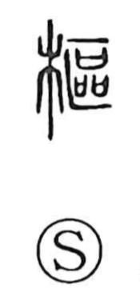

枢

Kun: | On: su
pivot ・ hinge ・ hub ・ vital point
Explanation
The original form is 樞, composed of 木 “wood” and 區 (区), which denotes a concealed place for prayer where many covenant receptacles (sai) were set. The character points to the wooden pivot at the entrance to such a place—the axle on which the door turns. Because this pivot governs the door’s movement, the graph came to mean a pivot or hinge in general, and by extension the vital point or foundational basis.